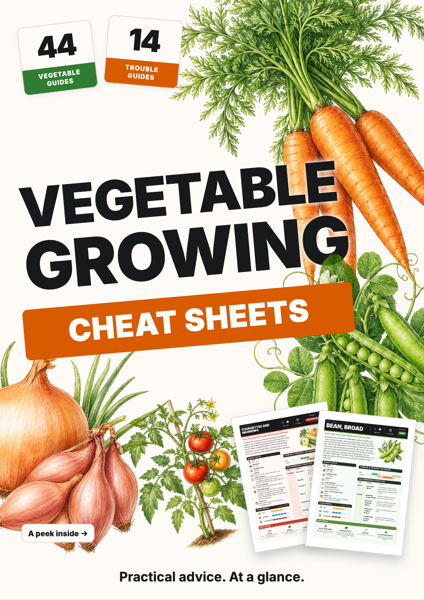

C · Bright and graphic
The current preferred cover. Larger simplified vegetable shapes, deep green lettering and a lively orange strip.

C remains the chosen direction: its blocky vegetable sketches and chunky lettering are essential. E is retained as a reference; its closer match to the sheets lost those qualities. Both keep the guide-count badges, real previews and light background.
The current preferred cover. Larger simplified vegetable shapes, deep green lettering and a lively orange strip.
The actual page illustrations, heavy Inter type, category orange and green, and badges shaped like the sheet widgets.
